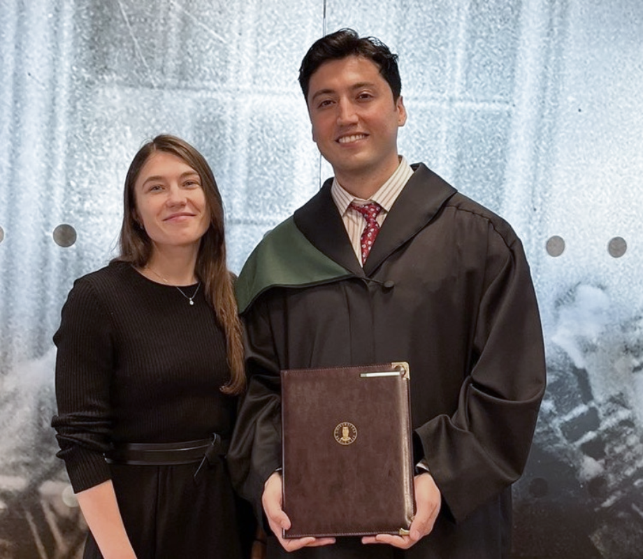

Teaching and Supervision

PhD Students
- Prithvinath Madduri (UiB, ongoing), co-supervisor
Predicting Microplastic Distribution and Aggregation Zones Using Lagrangian Particle Tracking Models - Kim Alexander Haugland (UiB, ongoing), co-supervisor
Uncertainty and Senitivity Analysis for Epidemiolocial Modelling of COVID-19 -
Ronald Katende (Makarere University, Uganda, 2025), co-supervisor
Numerical Analysis of Physics-Informed Neural Networks for Solving PDEs -
Parisa Torabi (UiB, 2025), co-supervisor
Combinatorial Optimization Problems and Solution Methods for Offshore Monitoring and Maintenance -
Ahmet Pala (UiB, 2024), main supervisor
Advanced Machine Learning Methods for Multifrequency Acoustic Data -
PhD Karina Kolodina (NMBU, 2019), co-supervisor
Comparative Analysis of Heterogeneous and Homogeneous Neural Field Models
Master Students
-
Vegard Sæle (2025)
Predicting Microplastic Distribution and Aggregation Zones Using Lagrangian Particle Tracking Models -
Reza Azad Gholami (2025)
Visual Transformers for Integrating Deep Vision and Acoustic Data -
Ketil F. Iversen (2021)
Physics-Informed Neural Networks for Inverse Advection-Diffusion Problems -
Shin Irgens Banshoya (2019)
Gradient Methods for Source Identification Problems -
Hugo Moreira (2019)
Dynamic Mode Decomposition and Koopman Operator (Data-Driven Modeling of Complex Dynamical Systems)
Courses Taught
- Nonlinear Differential Equations, University of Bergen (2020)
- Real Analysis, Norwegian University of Life Sciences (2016)
- Dynamical Systems, Uppsala University (2013–2014)
- Multivariate Calculus, Örebro University (2014)